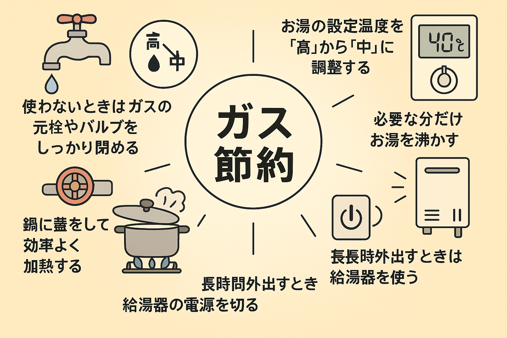
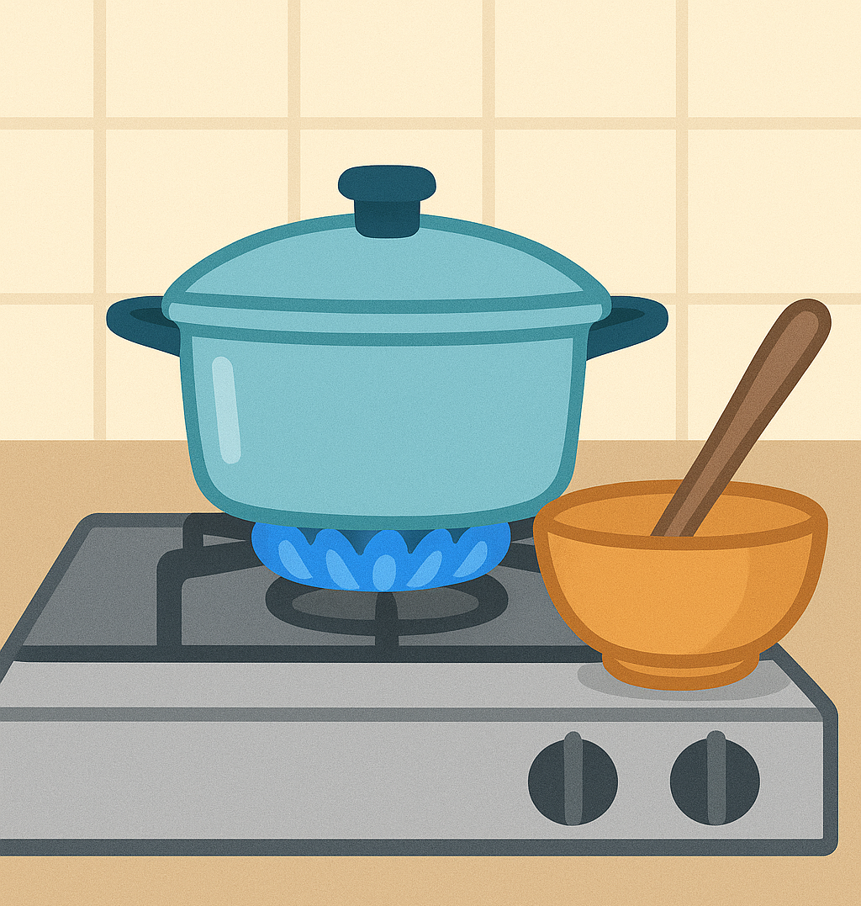
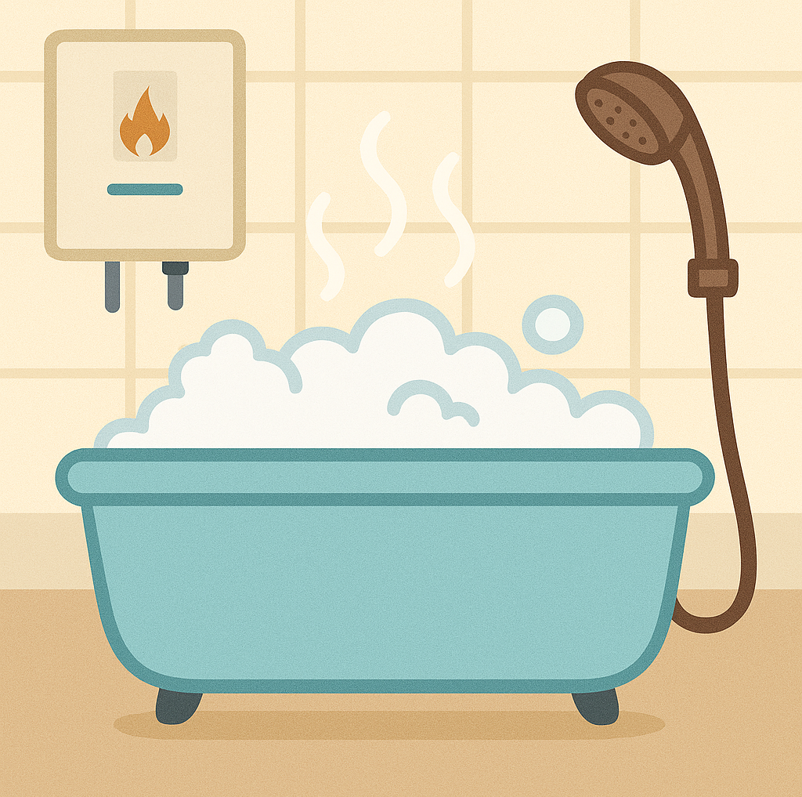
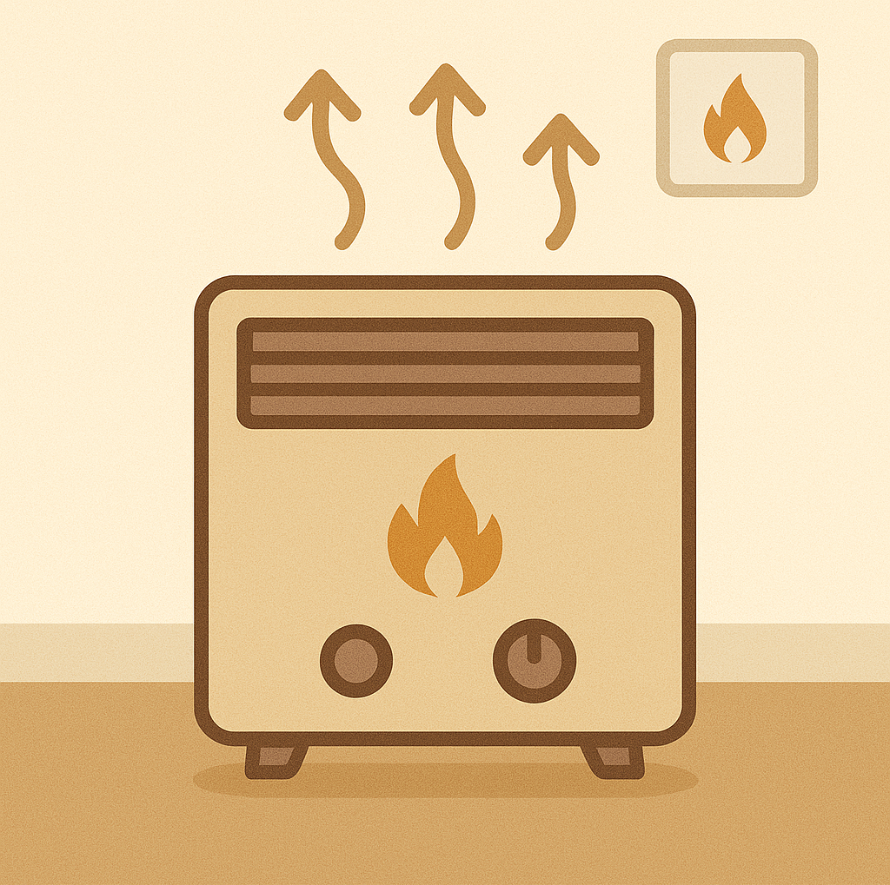

実は誰もが見落としがちなガス代節約の工夫とは？
私たちの生活に欠かせないガス。誰しも「ガス代はできるだけ節約したい」 と思うものです。ガス節約と聞くと「寒い冬でも我慢して暖房を控える」というイメージがあるかもしれませんが、 ちょっとした工夫で簡単にガス代を節約することができます。 具体的にどうすればガス代を節約できるのか、 日々の生活の中で快適さや便利さをできるだけ損なわずにできる節約方法を紹介します。
目次
毎日の調理にかかるガスを減らす方法？
家庭でガスが多く使われる場所のひとつがキッチンです。 ガスコンロや魚焼きグリル、ガスオーブンは毎日の料理で欠かせません。ガスを効率よく使うためには、 鍋やフライパンの底が平らで熱が伝わりやすいものを選ぶことが大切です。また、強火よりも中火を中心 に調理する方が省エネにつながります。煮込み料理では落し蓋を利用することで調理時間を短縮でき、 結果的にガスの使用量を減らせます。さらに、食器洗いには可能な限り水を使い、まとめて調理してガス の点火回数を減らすのも効果的です。。
給湯にかかるガスの節約ポイント
お風呂は家庭内でガスを最も多く消費する場所です。 シャワーや浴槽のお湯はり、台所や洗面所の給湯など、多くの場面でガスが使われています。 節約のためには、シャワー時間を1分短くするだけでも大きな効果があり、給湯温度を42℃から 40℃に下げるだけでもエネルギーを削減できます。追い焚きを繰り返すよりも、保温機能や入浴 タイマーを活用した方が効率的です。さらに、浴槽の残り湯を洗濯に再利用すれば、水道代とガス 代の両方を節約できます。
寒い季節のガス節約アイデア
寒い地域では、ガスファンヒーターや床暖房も多くの家庭で利用されています。 暖房のガス使用量を抑えるためには、まず部屋の断熱を工夫することが重要です。カーテンや断熱シート を使って熱を逃さないようにし、設定温度を1℃下げるだけでも年間を通して大きな節約効果があります。 また、必要に応じてエアコンや電気毛布と併用することで、ガスの使用時間を減らし、光熱費を効率的に抑える ことができます。
